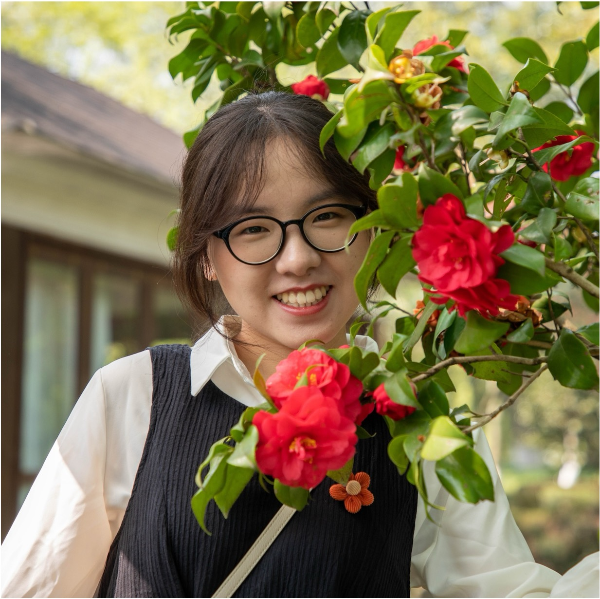

|
Sihui Ji Email / Google Scholar / Twitter / Github |
 |
Biography
Hi👋 I'm Sihui Ji, currently a first-year Ph.D. student at The University of Hong Kong, under the supervision of Prof.Hengshuang Zhao, I received my B.Eng. Degree and Honors Degree (Chu Kochen Honors College) from Zhejiang University, China. Now I focus on generative AI, especially for image and video.Recent Publications

|
FashionComposer : Compositional Fashion Image Generation.
|
Honors
- [2024] HKU Presidential PhD Scholar (HKU-PS).
- [2024] Outstanding Graduates of Zhejiang Province.
- [2023] Top Ten Honors Students in Chu Kochen Honors College.
- [2022] National Scholarship.
Professional activities
- Conference Reviewer for CVPR.